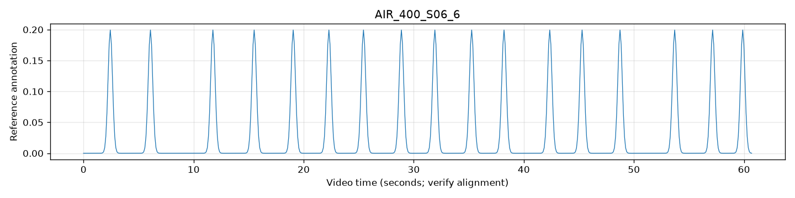

영상을 재생하며 호흡 시점 주석과 함께 확인하세요. 정상 구간은 별도 승인해야 합니다.
영상을 불러오지 못했습니다. 이 페이지를 닫고 최신 검토 목록에서 다시 열어 주세요.
영상 시간: 초 / 60.80초
뾰족한 봉우리는 사람이 표시한 호흡 시점을 가우시안 형태로 펼친 주석입니다. 센서로 측정한 호흡량이나 DeepPhys 추론 결과가 아닙니다.

아직 이 영상의 추론 결과를 생성하지 않았습니다. 이상 탐지 학습에 사용할 입력은 DeepPhys를 실행해 얻는 추정 파형입니다.
정답 주석의 시간축과 영상의 실제 정렬을 확인한 뒤 정상 구간·영상 품질을 승인하세요.
{
"id": "AIR_400_S06_6",
"subject": "AIR_400:S06",
"video": "C:/Users/OHS/air-400/data/AIR_400/S06/6.mp4",
"label": "C:/Users/OHS/air-400/data/AIR_400/S06/out/6.hdf5",
"fps": 10.0,
"frames": 608,
"duration": 60.8,
"video_sha256": "946a6a5b941ab442211084eddb2428da844eb57d0f92f38ca71aa1638342e8a9",
"label_sha256": "c56989c74e7126aa07abf99ecaca5191ef48c94bde76a685eeede564237c196d",
"label_key": "respiration",
"time_key": null,
"label_fs": null,
"label_time_mode": "duration_mapped_requires_alignment_review",
"hdf5_datasets": {
"filename": {
"shape": [],
"dtype": "object"
},
"respiration": {
"shape": [
600
],
"dtype": "float64"
}
},
"label_samples": 600,
"reviewable_start": 0.0,
"reviewable_end": 60.8,
"hdf5_attrs": {},
"annotation_filename": "b'6.mp4'",
"status": "pending_review"
}